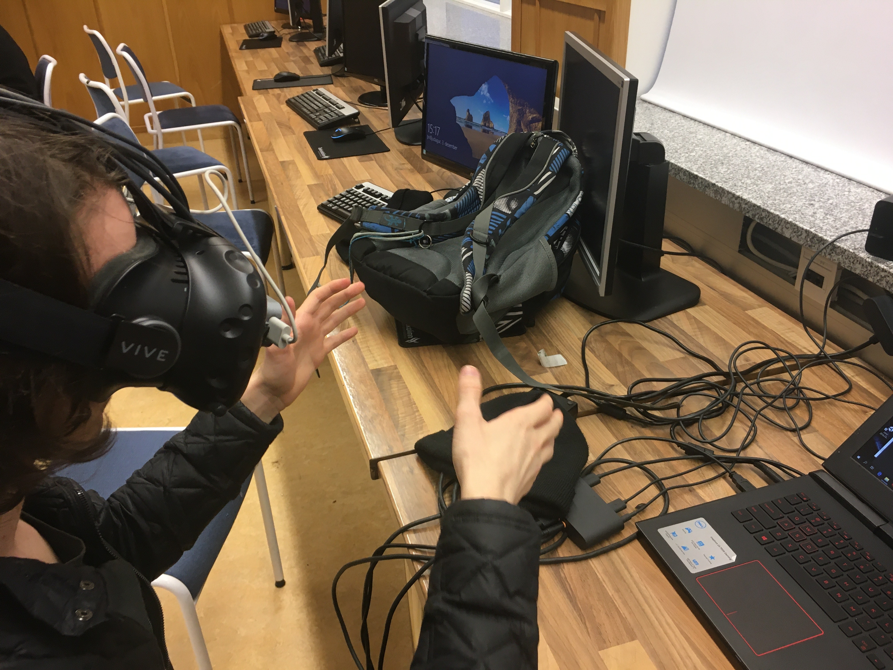
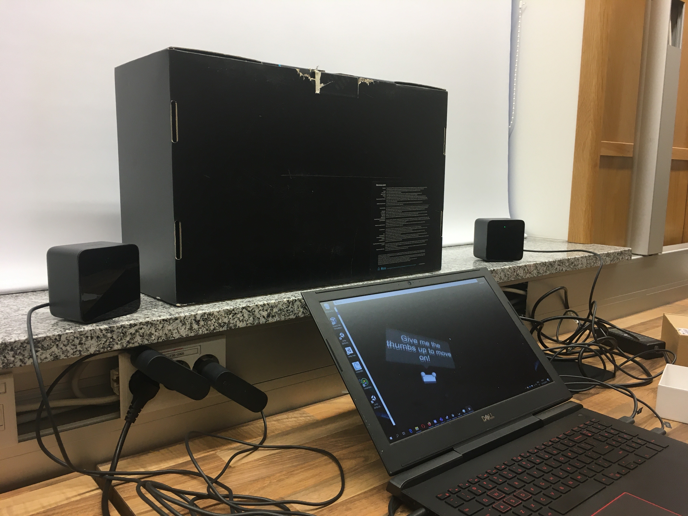
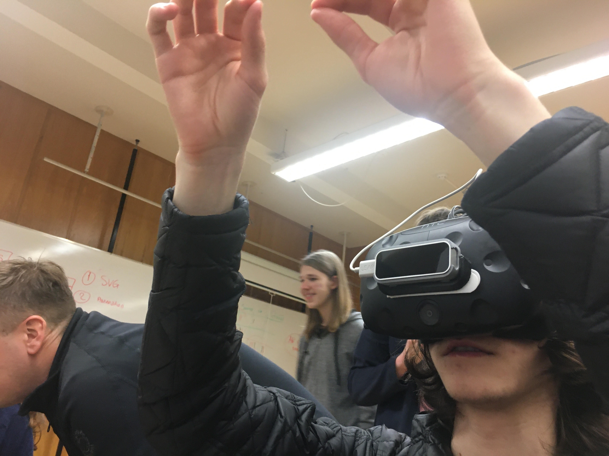

Lýsing
Við keyptum Leap Motion Controller og prófuðum hann með HTC Vive, prófuðum nokkra tilbúna leiki sem var hægt að hlaða niður af Leap Motion Unity síðunni. Allt virkaði fullkomlega nema vill benda á það að við 3D prentuðum mount fyrir Leap Motion Controllerinn sem átti að tolla á VR-Headsettinu en lentum í smá erfiðleikum með að láta það passa því prentunin var ónákvæm.
Leap motion er lítill kubbur sem þú setur fyrir framan eitthvert VR-Headset (í okkar tilfelli var það HTC-Vive) og myndavél inní kubbinum skannar hendurnar þínar og gerir þér kleift að stýra höndum inní leik eða forriti með þínum eigin hönum. (Sjá myndband fyrir dæmi af notkun)
Linkur á forritið sem við notuðum: https://gallery.leapmotion.com/blocks/


